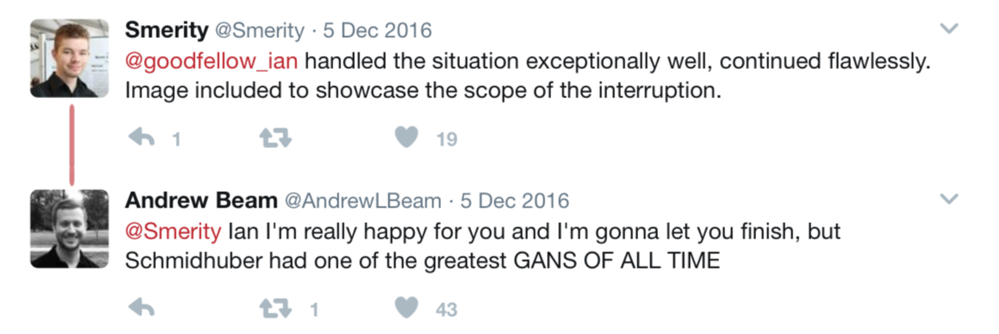

Motivation
Imagine we have an unlabeled dataset, a collection of facial images, and a black box algorithm. We pass these images into the algorithm and the algorithm is able to learn a probability distribution of the dataset.
Image 1: Generating New Faces
Once this probability distribution is learned , the algorithm is able to generate synthetic samples from the dataset that were not part of the original training data. This algorithm will be able to input the facial images and generate synthetic facial images like the real ones used as training data.
We could pass in pictures of all employees in a company and generate the facial image of a new employee. We could pass in images of homes and create new houses. We could even pass in short videos clips and generate synthetic videos. To generate this synthetic data, we can use what is called a Generative Adversarial Network.
“There are many interesting recent development in deep learning…The most important one, in my opinion, is adversarial training (also called GAN for Generative Adversarial Networks). This, and the variations that are now being proposed is the most interesting idea in the last 10 years in ML, in my opinion.”
– Yann LeCun
History
In 1992 Artificial Intelligence researcher Jürgen Schmidhuber from the University of Colorado proposed a principle, based on two opposing forces, for unsupervised learning of distributed non-redundant internal representations in his paper Learning Factorial Codes By Predictability Minimization. Here, each hidden unit in a neural network is trained to be different from the output of a second network, which predicts the value of that hidden unit given the value of all of the other hidden units.
In 2014 Ian Goodfellow and his tem proposed a new framework for estimating generative models via an adversarial process in their paper Generative Adversarial Nets. Here, Goodfellow describe a generative model that captures the data distribution which is trained simulatneously with a discriminative model that estimates the probability that a sample came from the training data rather than the the generative model, hence giving rise to Generative Adversarial Networks (GANs).
Goodfellow submitted this paper at the 2014 Neural Information Processing Systems (NIPS) conference. The crowd was very interested, but the following was questioned in the Export Reviews, Discussions, Author Feedback and Meta-Reviews:
Goodfellow responded with:Finally, how is the submission related to the first work on "adversarial" MLPs for modeling data distributions through estimating conditional probabilities, which was called "predictability minimisation" or PM (Schmidhuber, NECO 1992)? The new approach seems similar in many ways. Both approaches use "adversarial" MLPs to estimate certain probabilities and to learn to encode distributions. A difference is that the new system learns to generate a non-trivial distribution in response to statistically independent, random inputs, while good old PM learns to generate statistically independent, random outputs in response to a non-trivial distribution (by extracting mutually independent, factorial features encoding the distribution). Hence the new system essentially inverts the direction of PM - is this the main difference? Should it perhaps be called "inverse PM"?
- Assigned_Reviewer_19
Assigned reviewer 19 was Jürgen Schmidhuber. Schmidhuber believed that his paper and Goodfellow's paper were quite similar, claiming that Generative Adversarial Networks were the inverse of his predictability minimisation. It was clear that Goodfellow did not think the two had much in common. Goodfellow noted that the competition between two forces was not unique to predictability minimisation paper, that nearly all forms of engineering involve this competition between two forces, and hence was not a major factor in claiming the similarity between predictability minimisation and general adversarial networks.PM regularizes the hidden units of a generative model to be statistically independent from each other. GANs express no preference about how the hidden units are distributed. We used independent priors in the experiments for this paper, but that's not an essential part of the approach. PM involves competition between two MLPs but the idea of competition is more qualitative than formal--each network has its own objective function qualitatively designed to make them compete, while GANs play a minimax game on a single value function. Nearly all forms of engineering involve competition between two forces of some kind, whether it is mechanical systems exploiting Newton's 3rd law or Boltzmann machines inducing competition between the positive and negative phase of learning.
- Ian Goodfellow
Two years later, at the 2016 NIPS conference, Schmidhuber interrupted the lecture on Generative Adversarial networks being given by Ian Goodfellow. He walked up to the microphone while Goodfellow was speaking and exclaimed that he had previously done very similar work, which was overlooked and not given credit. Goodfellow handled this interruption well, and proceeded with his talk; however, this situation sparked social media interest outside the conference.

Image 2: Ian/Jürger Twitter Comments
Some people took to Goodfellow's side, claiming that Schmidhuber had no right to interupt a conference talk and disturb viewers. Others took to Schmidhuber's side seeing similarity in the two works, believing that Schmidhuber did inspire GANs. Others thought the entire situation was comical and jested about what was going on.
Image 3: Reddit Discussions
Image 4: Quora Post
Eventually, a Quora post popped up and Goodfellow responded to it. Here, he tried to explain the complicated nature of the Schmidhuber situation. He noted that Schmidhuber did not claim credit for the invention of GANs, but wanted the name to be changed to inverse PM. He explained that there is no good way to have situations like this mediated and had asked NIPS if Jürgen could file a complaint as to whether his publication was unfair to the preceeding Learning Factorial Codes By Predictability Minimization paper. He noted that he did not see any significant connection between the two papers as Schmidhuber's paper was about predictability minimization and his was on generative adversarial networks.
Soon after Goodfellow revised his paper, citing Schmidhuber and explicitly denoting three key differences between the two works:
- With Goodfellow's GANs, the competition between the networks is the sole training criterion, and is sufficient on its own to train the network. Predictability minimization is only a regularizer that encourages the hidden units of a neural network to be sta- tistically independent while they accomplish some other task; it is not a primary training criterion.
- The nature of the competition is different. In predictability minimization, two networks’ outputs are compared, with one network trying to make the outputs similar and the other trying to make the 2 outputs different. The output in question is a single scalar. In GANs, one network produces a rich, high dimensional vector that is used as the input to another network, and attempts to choose an input that the other network does not know how to process.
- The specification of the learning process is different. Predictability minimization is described as an optimization problem with an objective function to be minimized, and learning approaches the minimum of the objective function. GANs are based on a minimax game rather than an optimization problem, and have a value function that one agent seeks to maximize and the other seeks to minimize. The game terminates at a saddle point that is a minimum with respect to one player’s strategy and a maximum with respect to the other player’s strategy.
Prerequisites
Before discussing the technacalities of Generative Adversarial Networks, let us briefly cover some prerequisites. If you are comfortable with the field of machine learning, please feel free to skip this section.
Machine Learning:
Machine Learning is a type of Artificial Intelligence that provides computers with the ability to learn without being explicitly programmed. It is a method of teaching computers to make and improve predictions or behaviors based on some data. In this field, we explore the study and construction of algorithms that can learn from and make predictions on this data. Machine learning tasks are classified into three broad categories:
- Supervised Learning: Our data has input variables, $x$, and output variables, $y$. Here we use an algorithm to learn the mapping from the input function to the output in the form $y=f(x)$. We want to approximate the mapping function so well such that when we query a new input $x$ sample we can predict the output $y$ for that sample. When we train the algorithm our data essentially has a teacher to supervise the learning process.
- Unsupervised Learning: Our data only has an input $x$ and no corresponding output label $y$. Here, we want to model the structure or distribution in the data to learn more from it. Unsupervied algorithms ahve to discover and present the structure in the data without a teacher.
- Semi-Supervised Learning: Here, we have some input $x$ data that has associated output $y$ labels and some $x$ data that does not. For instance, we might have a collection of photos where some photos have a caption and some do not.
- Reinforcement Learning: Here our program interacts with a dynamic environment in which we must perform a certain goal. The program is given feedbak in terms of rewards and punishments. For instance, we might try and navigate a robot through a maze. When training it we punish it when it makes an incorrect turn and reward it when it makes a correct turn.
We can further categorize machine learning tasks considering the output of the system:
- Classification: The output variable is from a class. For instance the output variable could be round, square, or triangular.
- Regression: The output variable is a real number. We usually use supervised learning for regression.
- Clustering: We seek to discover groupings in the data. For instance we want to cluster customers based on purchasing data that we have.
- Density Estimation: Constructing an estimate based on observed data of an unobservable probability density function.
- Dimensionality Reduction: We want to reduce the dimensionality of our dataset by reducing the number of random variables under consideration. However, we want to preserve it's true predictive nature with the reduced feature representation.
Generative vs Discriminative Models:
Deep Learning:
Deep learning is a subfield of machine learning that is concerned with algorithms, Artificial Neural Networks (ANNs), inspired by the structure and function of the brain. These ANNs are generally presented as systems of interconnected neurons which exchange messages between each other. The neural network model mimics a neuron which contains the dendrites, nucleus, axon, and terminal axon. The neurons transmit information via synapse between the dendrites of one terminal and the axon of another. Computer scientists inherited this idea from the brain starting in the 1940's. However, during that time, computing power was limited and expensive and thus neural networks did not showcase their power. Recently, in 2011, neural networks resurfaced as computing power became stronger and cheaper.
Neural Networks
Neural Networks are the focus of deep learning. An artificial neural network looks as follows:

Image 5: ANN
Above we have an input layer, the hidden layer, and the output layer. The circles are our nodes, or neurons. The lines connecting them are the weights and information being lassed along. If we have a single hidden layer we have an artifical neural network. If we have more than one hidden layer then we have a deep neural network. So, we have the input data that is randomly weighted. This data is passed into the hiddenn layer. Here the weights are summed and an activation function like the sigmoid activation is applied on the sum. We feed forward through the neural network from the input to the layers to the output. We then go backwards and begin adusting th weights to minimize our loss function. This is called forward/backward propogation.
Convolutional Neural Networks
A convolutional neural network is a neural network comprised of one or more convolutional layers and followed by one or more pooling layers and fully connected layers.
Convolutional layers essentially take a weighted sliding window over the input to create a new output. A pooling layers function is to progressively reduce the spatial size of the representation to reduce the amount of parameters and computation in the network, and hence to also control overfitting. We see an example as follows:

Image 6: Convolution
Here we take a 3 x 3 sliding window over our 7 x 7 matrix and perform a weighted sum to generate a new value. We slide this window over all locations in the matrix.
In a rectified linear unit (RELU) layer .....
A pooling layer's function is to progressively reduce the spatial size of the representation to reduce the amount of parameters and computation in the network, and hence to also control overfitting. We see an example of max pooling as follows:
Image 6: Convolution
Here we divide a 4 x 4 matrix up into 2 x 2 cells and take the maximum value from each cell.
In a fully connected layer, after several convolutional and max pooling layers, all neurons in the previous layer (whether it be fully connected, pooling, or convolutional) are connected to to every single neuron it has. Fully connected layers are not spatially located anymore (you can visualize them as one-dimensional), so there can be no convolutional layers after a fully connected layer.
An example of a convolutional architecture would be
- Input
- Convolutional Layer
- Rectified Linear Unit Layer
- Pooling Layer
- Fully Connected Layer
Adversarial Networks
Batch Normalization
Zero-Sum Game
Nash Equilibrium
What are Generative Adversarial Networks (GANs)?
References
- http://machinelearningmastery.com/supervised-and-unsupervised-machine-learning-algorithms/
- https://en.wikipedia.org/wiki/Machine_learning
- http://stats.stackexchange.com/questions/114385/what-is-the-difference-between-convolutional-neural-networks-restricted-boltzma